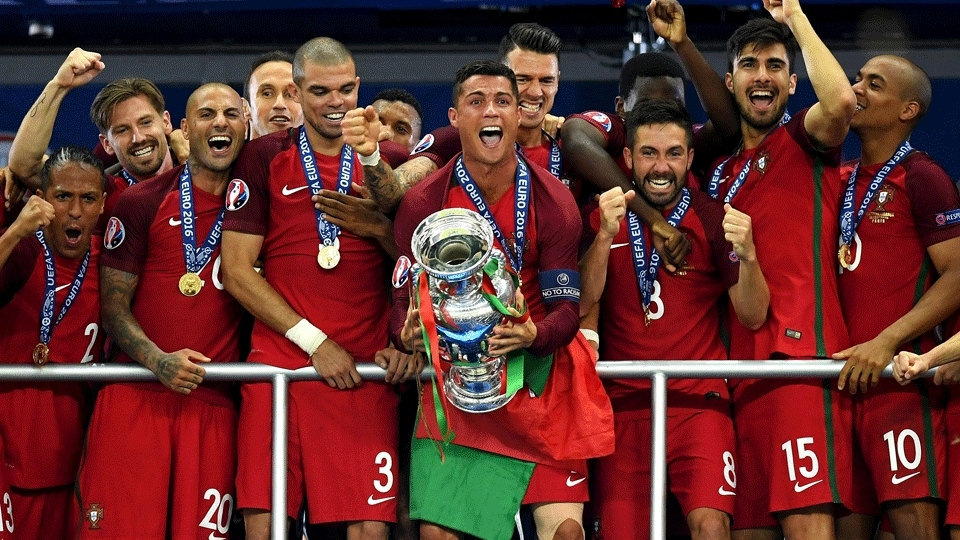

TÍTULOS
Portugal conquistou o título da Eurocopa uma vez, em 2016. Naquela edição, realizada na França, Portugal venceu a seleção francesa por 1-0 na final, com um gol de Éder na prorrogação. Este é o único título da Eurocopa na história da seleção portuguesa até o momento.